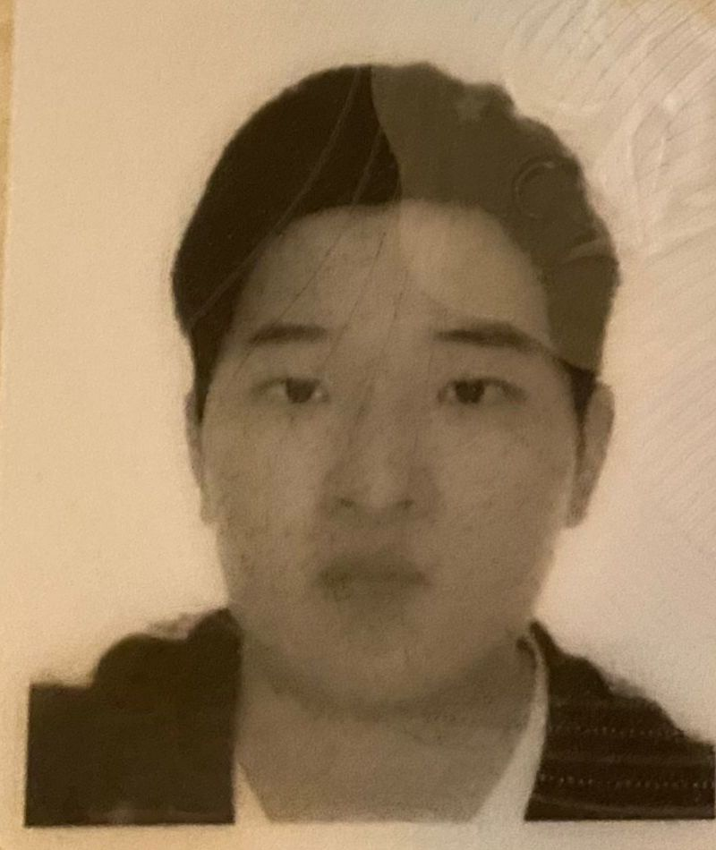

Lista de miembros propietarios de la pagina web:
Experto en Esquí Náutico.
Con 15 años de experiencia, habiendo participado en varios competiciones a nivel nacional e internacional logradando varias veces el primer y el segundo puesto. A su vez, soy profesor de los cursos de Esquí Nautico en el SeaWolf. Espero verte pronto.
Datos de contacto: yuejiexu@ucm.es
Aficionado en Remo y Kayak.
Desde los 12 años me apasioné por el remo y empecé a practicarlo y desde los 18 empecé a practicar kayak. Mi mayor deseo es que personas como yo a las que le gusten estos deportes encuentren aquí un lugar donde acercarse a ellos, practicarlos, y sobre todo, pasarlo bien (ya sea aprendiendo con nuestros monitores o con sus amigos).
Datos de contacto: pablvald@ucm.es
Surfista profesional.
Ganador de muchas competiciones como el ASP Word Tour, con numerosas aficiones relacionadas con este deporte como por ejemplo dar clase en el club náutico Seawolf, uno de los mejores clubes náuticos de España, y surfear con mis amigos.
Datos de contacto: cargon26@ucm.es
Buzo profesional experto en snorkel y apnea.
Con amplia experencia en inmersiones y exploraciones en playas como Tubbataha y vencedor del último campeonato de buceo deportivo celebrado en el arrecife de la bahía de Bondi, soy el profesor encargado de impartir las clases de dicha disciplina en SeaWolf
Datos de contacto: alvmas01@ucm.es
Experto en vela en aparejo fijo y libre.
Con 20 años de experiencia navegando y varios títulos de instructor marítimo homologados por la UCM, soy el profesor de los cursos de Navegación a Vela en SeaWolf.
Datos de contacto: iuliusgh@ucm.es
Aficionado en surf y experto en scuba diving
Comencé a interesarme sobre el buceo desde los 5 años y ¡no he parado desde entonces!. Practico surf cuando no estoy buceando.
Datos de contacto: yzhuo01@ucm.es
